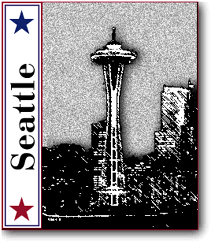

|
“What is Right with
America...”
by Kelly Gomas — “I am married and recently retired after a 30 year career with IBM. As a young retiree I have plenty of time to listen, to study, and to think. “I try not to be swayed by just nice words but to also look at matters objectively. And objectively I believe Bill Clinton has some concrete achievements to boast about. For too long politics has been filled with empty promises that don't get fulfilled after the election. And that is what is important — progress. Step by step, evolving to meet the challenges of the 21st century. “The President's phrase 'There is nothing wrong with
America that what is right about America cannot fix' is a
charismatic remark. This phrase touches me because
inspite of vicious personal assaults, Bill has continued
to have faith in a vision for America and more
importantly faith in the character of the American
people. As an American I need to be believed in by the
person who is supposed to be representing me! I think it
takes real character to look past the stones thrown by a
few, to the hearts and minds of our Great
America.” |
by Joan Ziegler Seibenick “I work in Detroit as a manager of Total Compensation Design for an automotive supply company. I have been married for ten years and have one beautiful son who will be three on Christmas Eve. “As a working mother and senior manager for a Fortune 15 company, I find it very difficult to find women mentors within my work environment. Therefore, I look outside of my immediate surroundings to find women who inspire and lead by example. There are many great women, both presently and in our past, who have been inspirational leaders in this country. One of the most visible of these women is Hillary Clinton. With her tenacity and spirit, she proves to all that it takes a lot more than just intelligence to succeed. “I look at Bill and Hillary and feel that there is hope for our country and our companies. Not only is Bill not threatened by Hillary�s strength, character and abilities, he encourages her to succeed. He knows her talents, trusts her expertise and calls on her leadership often. This takes a man of great character and integrity. “I will be proud to vote for the Clinton/Gore team this November.” |

by Kathleen Mulhern “I went to the polls on that cold November night in 1992, and I voted for Bill Clinton. I have a friend in the White House, I thought, and I put him there. “It�s now four years later and he hasn't let me down. In 1994, I shook hands the President. He had just finished with his early morning jog, and he was greeting people in front of the White House. Before I could say or do anything, the President turned around, looked me right in the eyes, smiled, stuck out his hand and said, 'It's nice to meet you!' I took his hand and the only thing I could think to say was, 'HI!!' “When I think about it now, that awkward greeting was actually very appropriate. 'Hi' is a greeting for a friend, and that's who I consider President Clinton to be. When that cold November night rolls around this year, once more I will cast my vote for Bill Clinton, and once more I'll see a bright future.” |
||
|
|
||||
|
|
||||
|
|
||||
Paid for by Clinton/Gore ’96 General Committee, Inc.